Toolchain Introduction
This toolchain will enable your containers to automatically build and push to a registry as well as deploy to a Kubernetes cluster hosted on the IBM Cloud. This toolchain will be comprised of multiple pipelines, one for each major component of the cluster. Ideally there would be four different layers in build/deploy process:
- Push code to repository
- Check to see what directories have been changed
- If config directory has been changed, rebuild base images and code layer
- If code directory has been changed, only build the code layer
- Build images
- Test images with Vulnerability Advisor.
- Deploy to staging environment
- Deploy to production environment
Each of these layers could come from a different repository and could be built and deployed when code is pushed.
For the purpose of this POC, we have one repo that contains all of our images and custom code. Our finished toolchain will appear as follows:
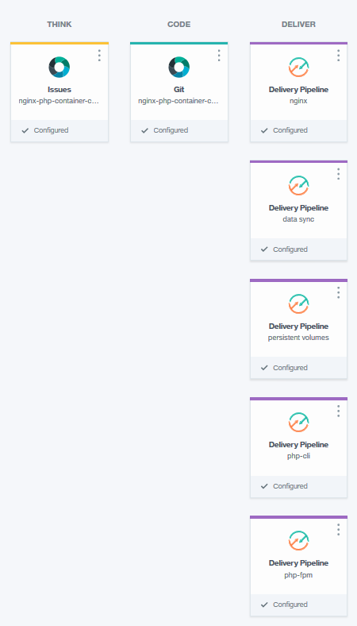
Building the Toolchain
- To get started, click on the "hamburger" menu at the top left of Bluemix and select Dev Ops.
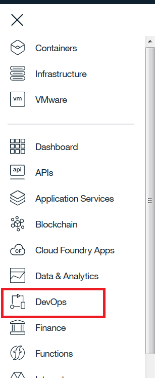
- Click on Toolchains on the left pane
- Click Create Toolchain
- Scroll down to Other Templates and select Build Your Own Toolchain
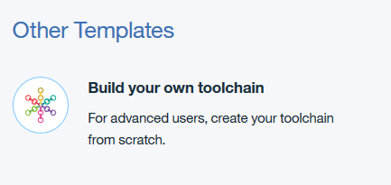
- Name toolchain and click Create
- Click on Add a Tool

- Click on Git Repos and Issue Tracking
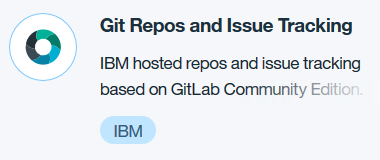
- Fill in details
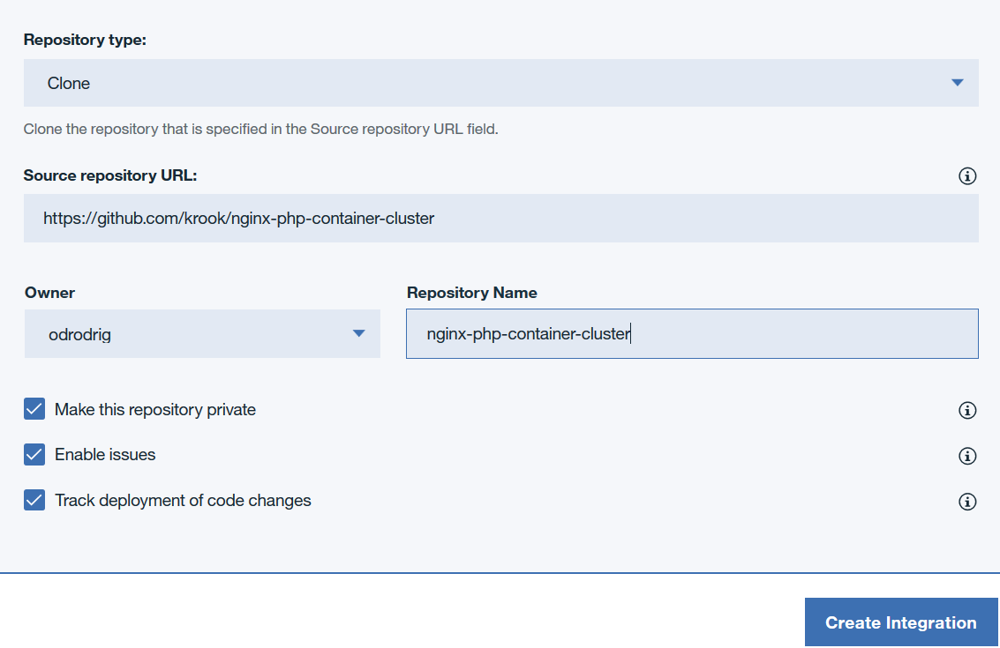
- Select Clone
- Enter the URL to Dan's repo
- Enter a Repository name (or not)
- Make sure the Track deployment of code changes checkbox is checked. This will allow the pipeline to trigger automatically with code changes.
- Click Create Integration
- Add another tool
- Select Delivery Pipeline

- Name the pipeline nginx
-
Click Create Integration
-
Before moving on, we need to get an IBM Cloud API key. Click on Manage at the top right, hover over Security and select IBM Cloud API keys.
-
Click on Create, give your key a name and description, click Create.
-
Click Show and copy your API key. Make absolutely sure that you copied the key correctly because after you leave this page, you will not be able to see the key again.
-
Go back to your toolchain. You can get there by clicking on the menu at the top left, selecting DevOps, then selecting your toolchain from the list.
-
On the toolchain page, click on the Delivery Pipeline.
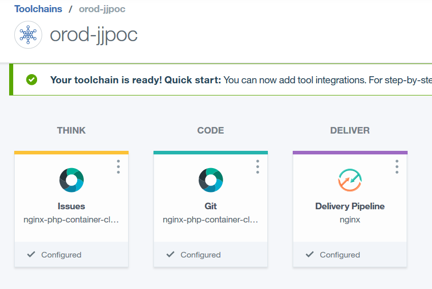
-
Click Add Stage
-
Make changes to Input tab.
- Give stage a name
- Ensure git URL and branch are correct
- Ensure that Run jobs whenever a change is pushed to Git is selected. This will allow for the container images to build automatically.
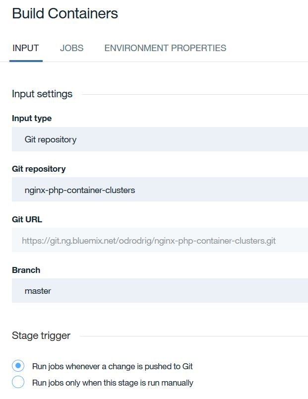
- Click on the Jobs tab. Click on Add Job and select Build.
- Under Builder Type select Container Registry.
- Under API Key see if your IBM Cloud API Key appears. If not, click on Add an existing API Key and enter the API key that you copied earlier.
- For IBM Cloud Container Registry namespace enter jjdojo
- In Docker image name enter nginx
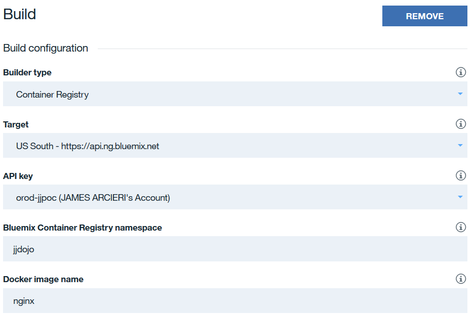
- In the Build Script section enter the following:
bash echo "Calling the build script" cd scripts/pipeline . ./buildImage.sh -
Leave the rest as it is and click on Save at the bottom of the stage.
-
Next, create another stage and name it Test. In this stage you can run any custom test scripts or use the built-in Vulnerability Advisor.
-
Click on the jobs tab, add a new job, and select Test.
-
Under Tester Type, select Vulnerability Advisor
- Under API Key slect the key for your org or enter a new one
- Under Bluemix Container Registry Namespace enter your Namespace
- Select the Docker Image Name and Docker Image Tag that you want to test.
- Add any additional testing scripts in the Test Script area.
- When done, click Save
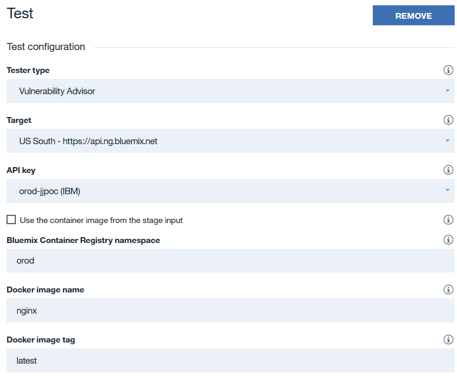
-
Once you are back on the pipeline page, click Add Stage again. Now we need to add our stage for deploying to the staging environemnt.
-
Name the stage Staging and make sure the input is coming from the previous build stage as seen below.
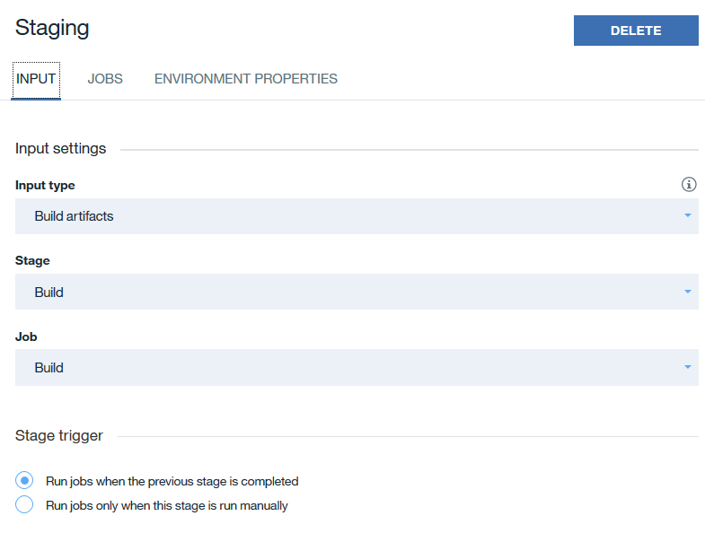
- Next, click on the Jobs tab and click Add job and select Deploy.
- For Deployer Type select kubernetes
- Enter your API Key under API Key
- Select the cluster that you would like to deploy to.
- In the Deploy Script section, enter the following:
```bash #!/bin/bash
. scripts/pipeline/pipelineDeployScripts/nginx-deploy.sh ``` 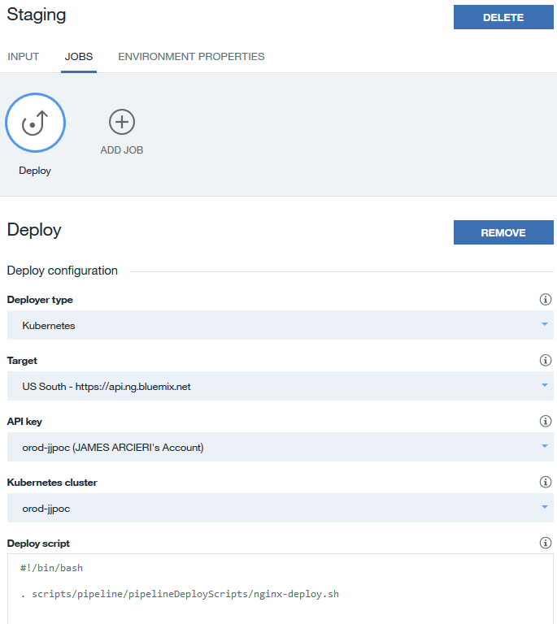
-
Next we need to add an environment variable to tell the script which environment we are deploying to. Click on the Environment Properties tab.
-
Click Add Property, select Text Property, and under name enter ENVIRONMENT and under Value enter stg.
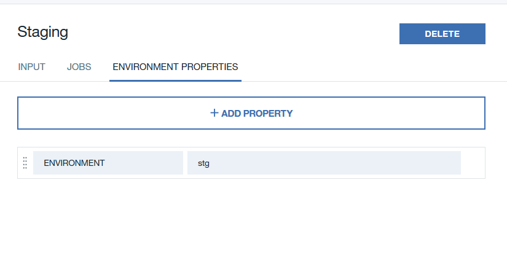
-
When done, click on Save
-
Next, we need to create another deployment stage but this time we will deploy to the production environment. Repeat steps 22 - 24 but this time, name the stage Production, and for the environment property, enter prd. The deploy script for both environments will be the same.
-
We should now have four stages in our nginx pipeline. This pipeline will handle the building, testing, and deploying of the nginx container in two different environments. We now need to add pipelines for our other containers. Click on the toolchain name at the top left of the page to take you back to the toolchain page.
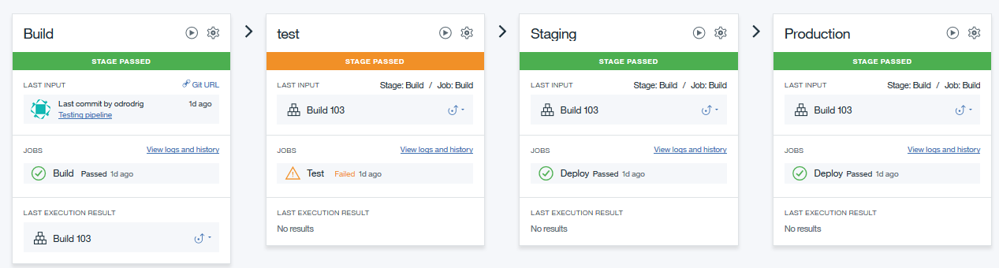
- Follow steps 14 - 25 to create pipelines for the other images while making sure to change the image names for the respective pipeline as well as making sure that the registry namespace and targeted cluster remains the same. Be sure to change the deploy script for each pipeline as follows:
- Note that php-cli does not need to be deployed into both environments
- For php-cli: ```bash #!/bin/bash
. scripts/pipeline/pipelineDeployScripts/php-cli-deploy.sh
```
- For php-fpm: ```bash #!/bin/bash
. scripts/pipeline/pipelineDeployScripts/php-fpm-deploy.sh
```
-
Next, we need to add the step to build the persistent volumes. Create one more pipeline and name it Persistent Volumes
-
Click on it to configure the pipeline and add a new stage.
-
Add a new Deploy job, for Deployer Type select Kubernetes, enter your API Key, and select your target cluster.
-
For the in the Deploy Script section, enter the following:
bash #!/bin/bash kubectl apply -f scripts/kubernetes/persistent-volumes.yaml
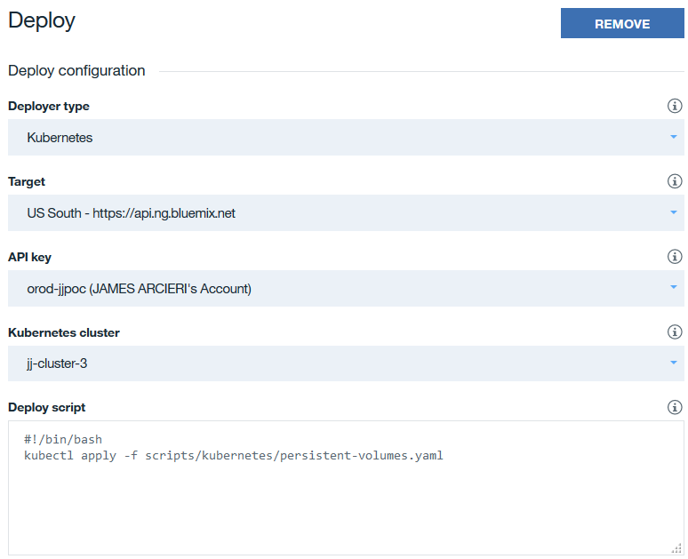
-
When done, click Save.
-
Now we just need to add one last pipeline that will allow us to manually run scripts to transfer files and data between environments. Click on the toolchain name at the top left to go back to the toolchain page.
-
Click Add a Tool
- Select Delivery Pipeline
- Name the pipeline Data Sync
-
Once the pipeline has been created, click on it to configure the stages.
-
Click Add Stage and name the stage Transfer Files
-
On the Input tab, change the Stage Trigger to Run jobs only when this stage is run manually
-
Click on the Jobs tab
- Click Add Job and select Deploy
- Name the job Transfer Files
- Set the Deployer Type to Kubernetes
- Verify the API Key, Target, and Kubernetes Cluster
-
For the Deploy Script enter the following: ```bash #!/bin/bash
echo $(kubectl get pod -l "app=php-cli" -o jsonpath='{.items[0].metadata.name}')
kubectl exec $(kubectl get pod -l "app=php-cli" -o jsonpath='{.items[0].metadata.name}') /root/drush/transfer-files.sh
``` - Click Save 34. Add another stage - Name the stage Transfer Data - Click on the Input tab and set the Stage Trigger to Run jobs only when this stage is run manually
-
Click on the Jobs tab
- Click Add Job and select Deploy
- Name the job Transfer Data
- Set the Deployer Type to Kubernetes
- Verify the API Key, Target, and Kubernetes Cluster
- For the Deploy Script enter the following: ```bash #!/bin/bash
echo $(kubectl get pod -l "app=php-cli" -o jsonpath='{.items[0].metadata.name}')
kubectl exec $(kubectl get pod -l "app=php-cli" -o jsonpath='{.items[0].metadata.name}') /root/drush/transfer-data.sh
``` - Click Save
- Our toolchain is now configured and should look similar to the image below:
All that we have to do now is push a change to our repo to automatically kick off the pipeline.